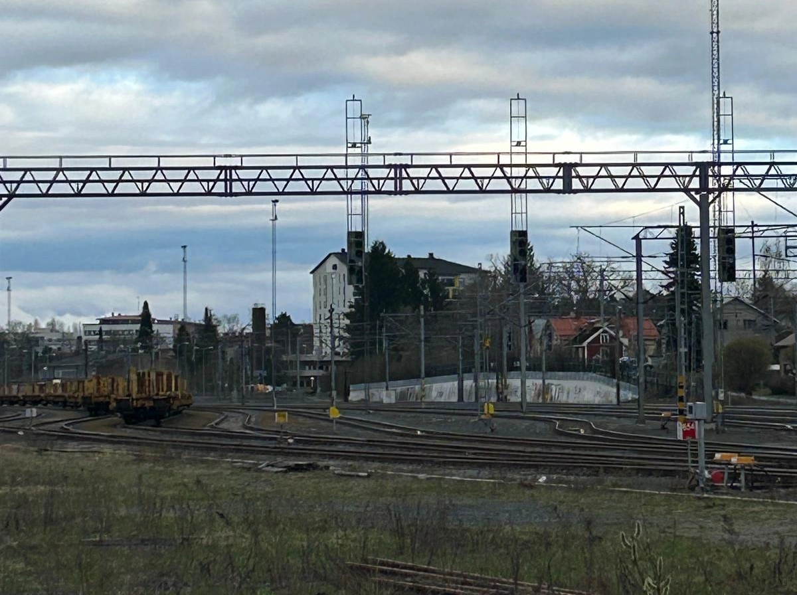
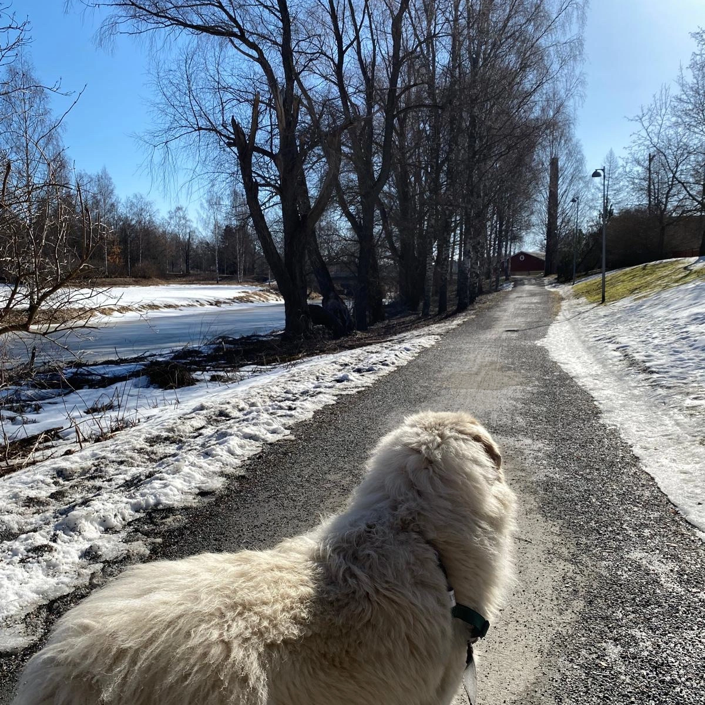
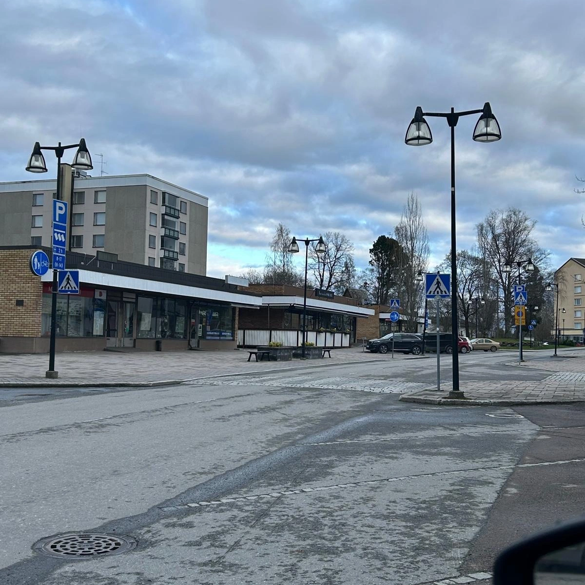
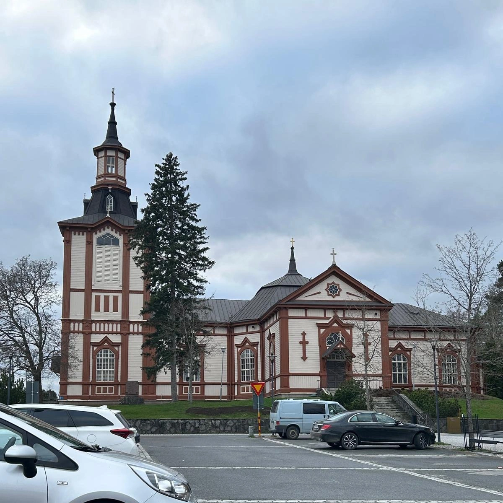
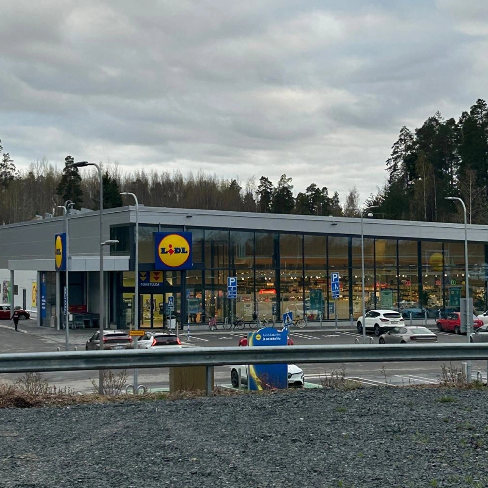
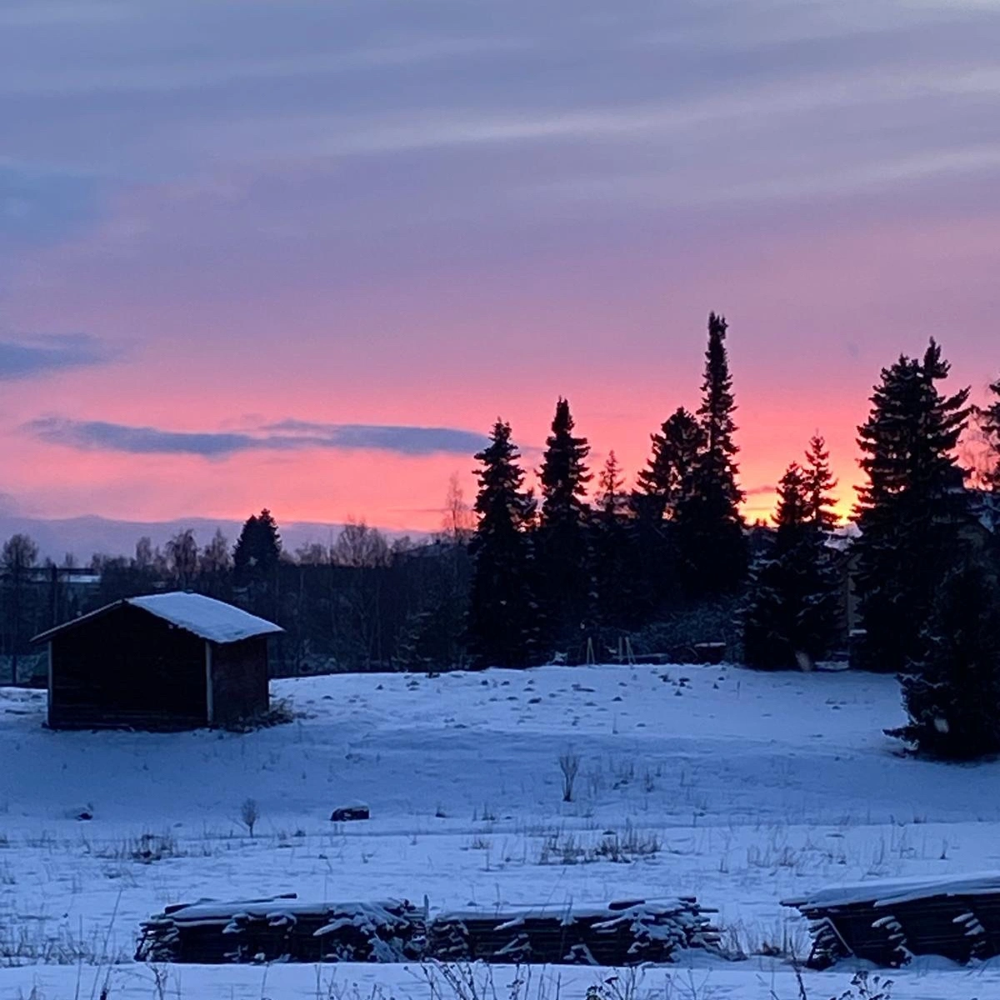
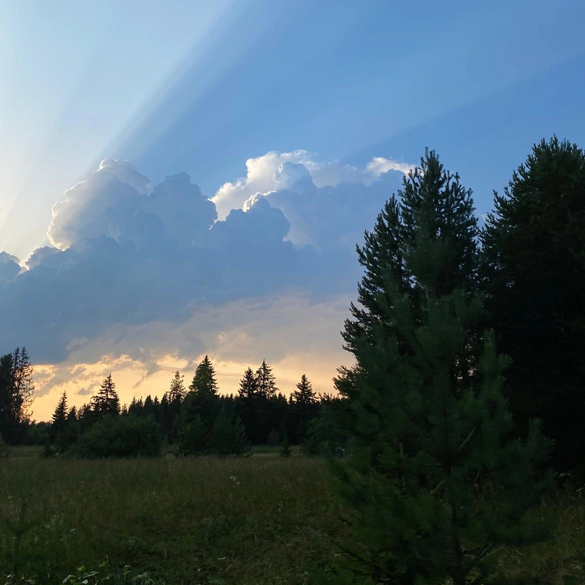
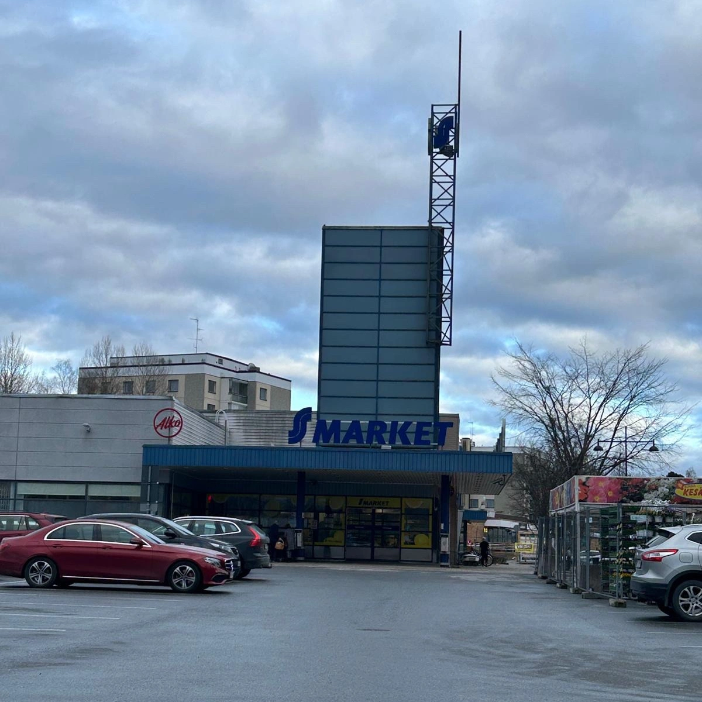
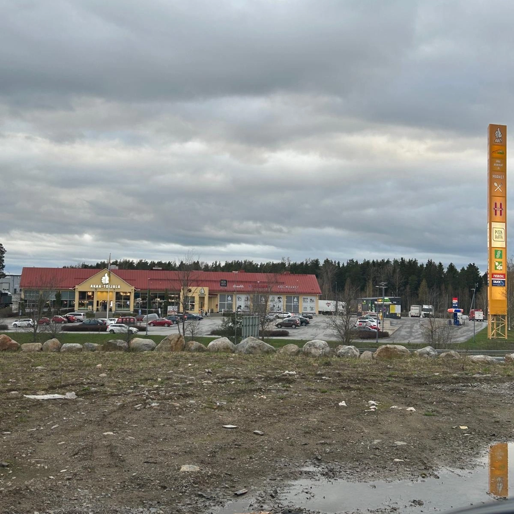

Toijala
Infoa
Toijala on entinen tampereen kaupunki, joka on nykyään osa Akaan kaupunkia.
Se tunnetaan yleisesti sen junayhteyksistä Tampereelle, Helsikiin ja Turkuun.
Risteysaseman lisäksi Toijala tunnetaan tapettitehtaistaan.

Lähiön kaupat
Asuinlähiössäni on aikavähän kauppoja. Tässä muutamia esimerkkejä:
LidlABC Toijala
S-Market
Hyödyllisiä linkkejä
Akaalla ja Toijalalla on omat nettisivunsa:
Akaan kaupungin nettisivutToijalan nettisivut
Kuvagalleria

Nahkialanjoki

Toijalan keskusta

Kirkko

Lidl

Korvenpolku

Lumi pelto

Pelto

S-market
